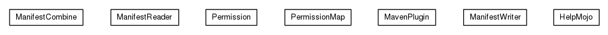

JavaScript is disabled on your browser.
Skip navigation links
Overview
Package
Class
Use
Tree
Deprecated
Index
Help
Prev Package
Next Package
Frames
No Frames
All Classes
Package org.universAAL.support.maven.manifest

Class Summary
Class
Description
HelpMojo
Display help information on uaal-manifest-maven-plugin.
Call
ManifestCombine
ManifestReader
ManifestWriter
MavenPlugin
Permission
PermissionMap
Skip navigation links
Overview
Package
Class
Use
Tree
Deprecated
Index
Help
Prev Package
Next Package
Frames
No Frames
All Classes
Copyright © 2018
universAAL Consortium
. All rights reserved.